| Menu Dados |
|
Selecionar
/ Desselecionar
Essa função
permite selecionar e desselecionar
pontos continuamente da matriz de dados, que podem ser usados para
operações
específicas como exclusão, interpolação, operações matemáticas,
exportação,
entre outras.
Para ativar a
função, clique no menu
“Dados ► Selecionar / desselecionar
pontos” ou
no botão 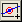
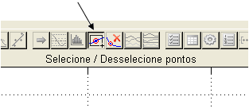
Com a função
ativada, o cursor passará a ser uma seta preta e
a operação do mouse
passará a ser a
seguinte:
|
Operação |
Comportamento |
|
Clique simples
com o botão esquerdo sobre um ponto |
Seleciona o
ponto. Caso haja pontos sobrepostos, apenas o primeiro será selecionado. |
|
Definição de um
retângulo com o botão esquerdo |
Seleciona todos
os pontos no interior do retângulo. |
|
Definição de um
retângulo com o botão direito |
Desseleciona todos os
pontos no interior do retângulo. |
|
Clique simples
com o botão direito |
Desativa a
função. |
Exemplo de
Seleção:
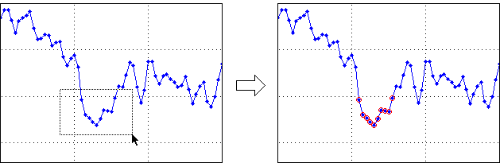
Exemplo de Desseleção:
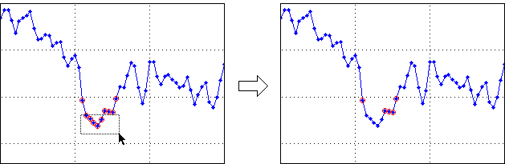
A quantidade de
pontos selecionados (apresentada no canto superior
direito da janela) será atualizada a cada alteração:
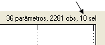
Com a alteração
das funções do mouse, o mesmo não poderá ser
utilizado para alterar o zoom do
gráfico, o que deverá ser feito por meio dos botões de controle da
abscissa, no
canto inferior direito da janela:
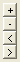
Para desativar
a função, clique novamente no botão 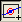
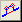
-
Botão 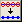
-
Botão 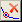
-
Botão 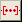
-
Botão  , referente
à operação “Definir
pontos selecionados como eventos”, permitindo a rápida
definição de novos eventos.
, referente
à operação “Definir
pontos selecionados como eventos”, permitindo a rápida
definição de novos eventos.
- Botão  , referente
à operação “Restaurar
o zoom”.
, referente
à operação “Restaurar
o zoom”.
É possível selecionar a função "Selecionar / Desselecionar pontos" durante a exibição de plotes ou gráficos múltiplos, porém apenas o plote principal pode ser usado para seleção de pontos.
As operações
que se aplicam apenas aos pontos selecionados
são explicitadas nos menus (por exemplo, “Excluir pontos
selecionados”). As
operações em que o usuário tem a opção de aplicar as modificações
apenas nos
pontos selecionados apresentam, na Caixa de Diálogo, um campo “Em”, em
que o
usuário deve selecionar a opção “Seleção”:
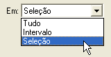
| |
Obter
parâmetros do Workspace |
Selecionar |
|